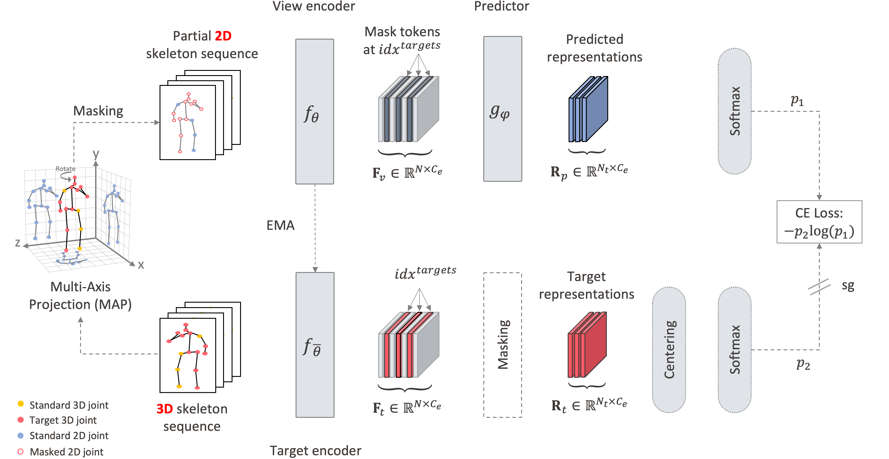

Motion-aware masking
Informative joints are masked more often so prediction remains meaningful.
Self-Supervised Skeleton Representation Learning
École polytechnique fédérale de Lausanne (EPFL)
S-JEPA predicts latent joint representations instead of reconstructing raw coordinates. The result is stronger and more transferable skeleton features.
Abstract
Masked self-reconstruction is effective for skeletal action recognition, but raw coordinate targets can overemphasize noisy local details. S-JEPA replaces those targets with latent representations of missing joints from the same sequence.
This objective encourages the model to capture higher-level context and depth cues. A simple centering operation further stabilizes training.
With a vanilla transformer backbone, S-JEPA reaches state-of-the-art performance on NTU60, NTU120, and PKU-MMD across linear probing, fine-tuning, semi-supervised learning, and transfer learning.
Method

S-JEPA uses motion-aware masking, a view encoder, an EMA target encoder, and latent-space cross-entropy to learn stronger skeleton representations.
The method keeps the architecture simple while moving the learning signal to a more useful target space.
Method Highlights
Informative joints are masked more often so prediction remains meaningful.
The predictor matches latent targets instead of regressing raw coordinates.
A momentum encoder provides stable targets and helps avoid collapse.
Rotations, translations, and flips improve robustness without changing semantics.
Centering and sharpening improve convergence and feature quality.
A vanilla transformer is enough when the pretraining target is chosen well.
Selected Results
Linear Eval
89.8%
NTU60 XView with frozen features.
Fine-Tuning
97.6%
Best NTU60 XView result reported in the paper.
Semi-Supervised
67.5%
NTU60 XSub with only 1% labels.
Transfer
74.2%
Best PKU-II transfer result when pretrained on NTU120.
Citation
@inproceedings{abdelfattah2024s,
title={S-jepa: A joint embedding predictive architecture for skeletal action recognition},
author={Abdelfattah, Mohamed and Alahi, Alexandre},
booktitle={European Conference on Computer Vision},
pages={367--384},
year={2024},
organization={Springer}
}